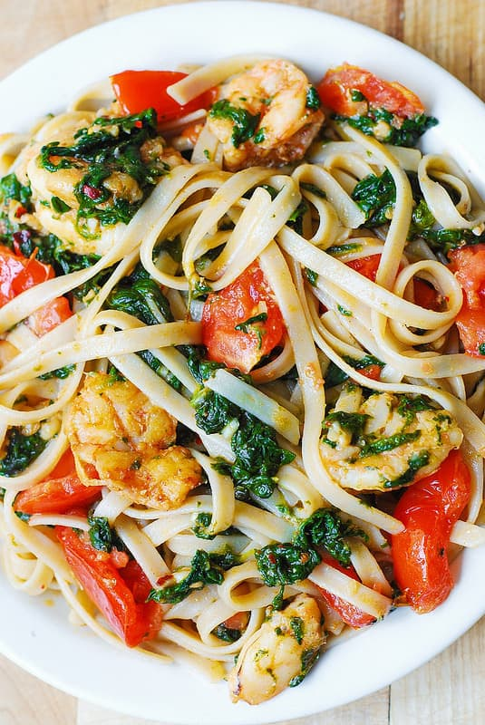

Shrimp Tomato Spinach Pasta in Garlic Butter Sauce

Description
When I went to London, I had one of the tastiest pasta
dishes I ever had. It was a tomato spinach pasta, quite a
simple affair, but I have always had a love for the most
basic of foods. Since then, I've been on the lookout for pastas
similar to that. I haven't been able to find it, but here is
a recipe that I've been meaning to try. It's by Julia, on her
website Julia's Album.
Ingredients
- 1 lb shrimp, fresh, uncooked, shelled, deveined
- 5 tomatoes, chopped into large cubes
- 1 cup spinach, cooked
- 5 garlic cloves, minced
- 4 tbs butter
- 1 tbs olive oil
- 1/4 lemon
- 1/4 tsp salt
- 1/2 tsp crushed red pepper
- 1/4 tsp paprika
- 10 oz fettuccine pasta
- 1/2 cup Parmesan cheese, grated
Steps
- Heat large skillet on medium-high heat. Add 1 tbs butter
and 1 tbs olive oil until melted.
- Add fresh shrimp and half the minced garlic. Make sure
shrimp is not crowded. Cook for 1 minute on one side until
pink on that side.
- While the shrimp is cooking, generously sprinkle paprika
and salt over uncooked side of the shrimp.
- Flip shrimp over and cook for another 1-2 min until
pink on other side.
- To the skillet with shrimp, add chopped fresh tomatoes,
cooked spinach, and the remaining amount of minced garlic.
Add 1/2 tsp crushed red pepper (or more). Mix everything
well, remove from heat while you cook pasta.
- Cook pasta according to package instructions. Drain
and rinse with cold water to prevent pasta from cooking and
getting mushy.
- Add cooked pasta to skillet with shrimp and vegetables
with 1 or 2 tbs butter.
- Add freshly squeezed lemon juice. Don't add too much.
- Season with salt and more crushed red pepper. Warm up
on medium heat until shrimp is cooked through, and all
ingredients are heated enough.
- To serve, top with grated Parmesan cheese.